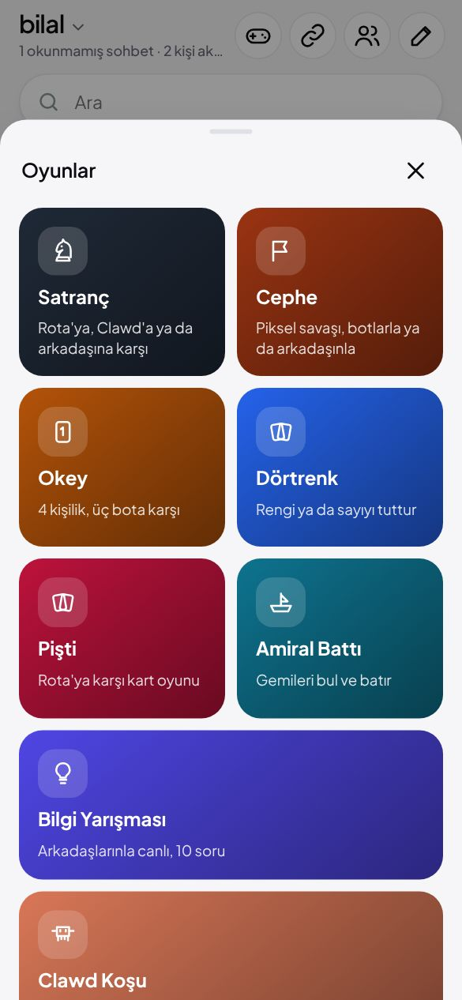
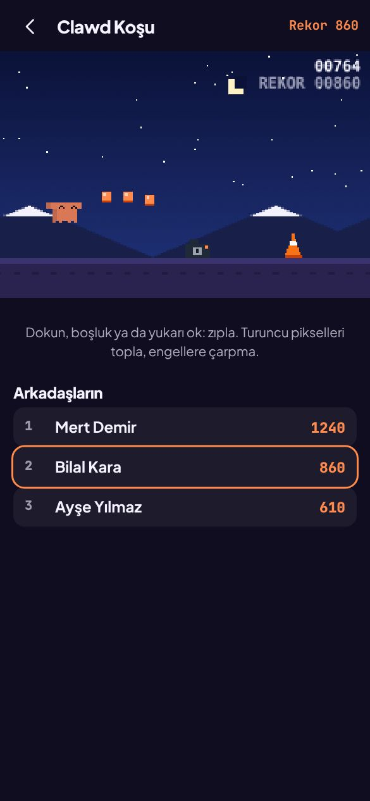
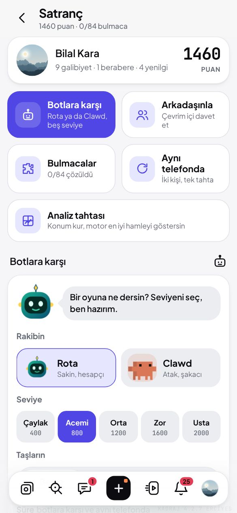
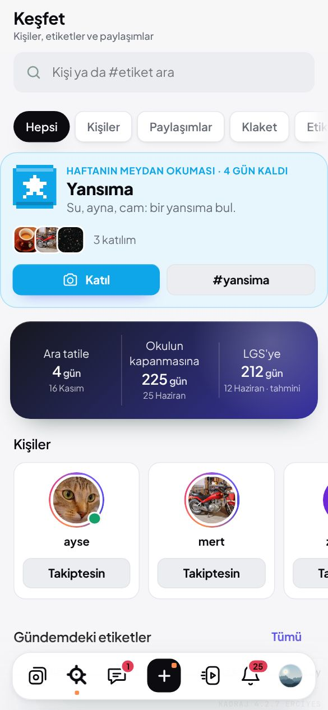
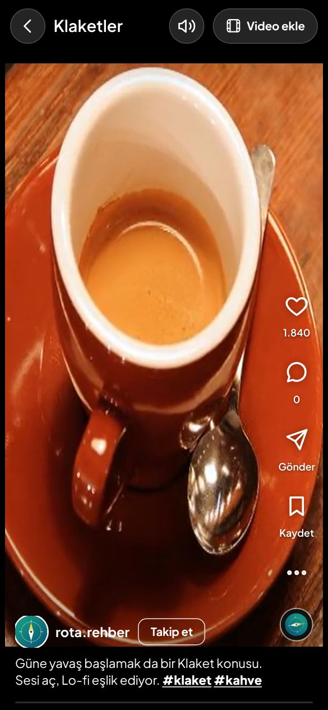
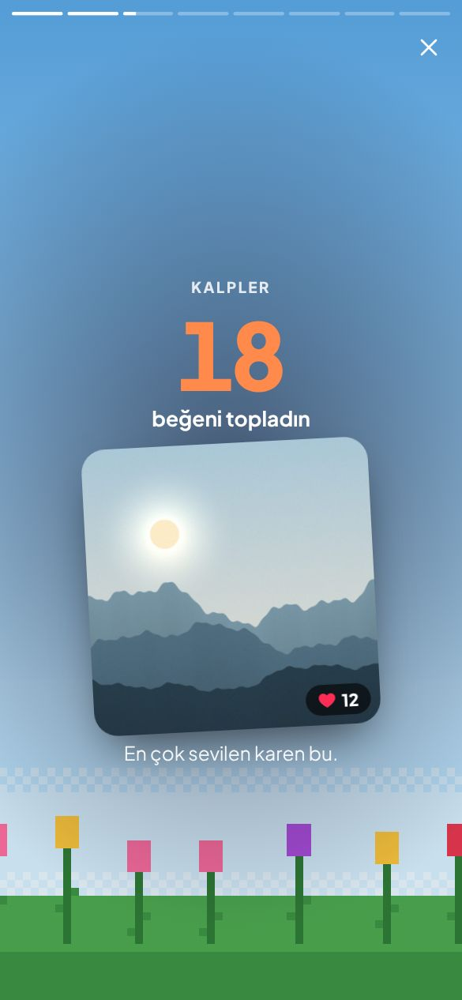

Fotoğraf, Klaket, sohbet, hikâye ve bir sürü oyun. Reklam yok, yabancı yok: yalnızca sen ve arkadaşların.
Çoklu fotoğraf, anket, not ve 24 saatlik hikâyeler. Clawd hikâye şeridinde kendi piksel odasında yaşıyor; gece uyur, sabah gitar çalar.
Birebir ve grup sohbetleri, sesli mesaj, görüntülü arama, tepkiler ve kamp ateşi serisi. Bazı sözler ekranda küçük bir şenlik başlatır.
Profilinin üstüne piksel bir sahne koy: Erciyes, İstanbul, Uzay, Lale bahçesi… Kazandığın başarım rozetleri adının altında vitrinde durur.
Arkadaşlarınla canlı oynanan oyunlar: biri çizer diğerleri bilir, 160 soruluk Bilgi Yarışması, Okey, Dörtrenk, Pişti, Amiral Battı ve piksel savaşı Cephe.

Kameralardan, kitap yığınlarından ve trafik konilerinden kaç, turuncu pikselleri topla. 700 puanda gece olur; rekorun arkadaşlarının tablosunda görünür.

Beş seviye bot, arkadaşınla çevrim içi maç, oyun incelemesi, 84 doğrulanmış mat bulmacası ve motorun en iyi hamleyi gösterdiği analiz tahtası.

Yansıma, Gölge, Kahvaltı, Üçte bir kuralı… Keşfet'te Katıl'a bas, fotoğrafını seç; etiket kendiliğinden eklenir. Kimlerin katıldığını hemen görürsün.

Telefonundan video yükle, Kurgu ile kes, hızlandır, yazı ve filtre ekle. Klaketler hiç kırpılmadan, olduğu gibi oynar.

Kaç gündür Kadraj'dasın, en çok beğenilen karen, en büyük hayranın, oyunların ve rozetlerin. Sonunda tek dokunuşla hikâyende paylaş.

Kadraj o gün Zirve'ye ulaşıyor: kutlama, rozet ve şimdiden yazıp mühürlediğin "Zirve'ye mesaj" mektupların açılıyor.
Kadraj tarayıcıda açılır; Android'de uygulama olarak da kurabilirsin.